import numpy as np
import matplotlib.pyplot as plt
%matplotlib inline
import seaborn as sns
from matplotlib import patchesCIFAR
inp = np.random.choice(range(10), (5, 5))
filter_conv = np.array([
[1, 0, -1],
[1, 0, -1],
[1, 0, -1]
])plt.imshow(inp, cmap='Greys')<matplotlib.image.AxesImage at 0x7f7132292e80>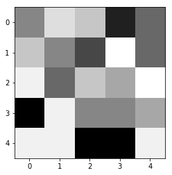
fig, ax = plt.subplots(ncols=3, figsize=(12, 4))
sns.heatmap(inp, annot=True, cbar=None, ax=ax[0], cmap='Purples')
sns.heatmap(filter_conv, annot=True, cbar=None, ax=ax[1], cmap='Purples')
g = ax[0]
rect = patches.Rectangle((0,0),3,3,linewidth=5,edgecolor='grey',facecolor='black', alpha=0.5)
# Add the patch to the Axes
g.add_patch(rect)
ax[0].set_title("Input")
ax[1].set_title("Filter")Text(0.5, 1.0, 'Filter')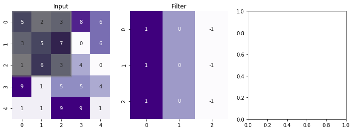
import numpy as np
import matplotlib.pyplot as plt
import matplotlib.ticker as mticker
import matplotlib.animation
#####################
# Array preparation
#####################
#input array
n = 6
p = 0
s = 2
f = 3
a = np.random.randint(0, 5, size=(n, n))
# kernel
kernel = np.tile([1, 0, -1], f).reshape(f, f)
#f = kernel.shape[0]
def create_animation(a, kernel, p, s, fname, frate, figsize=(8, 4)):
if p:
# visualization array (2 bigger in each direction)
va = np.zeros((a.shape[0]+2*p, a.shape[1]+2*p), dtype=int)
va[p:-p,p:-p] = a
va_color = np.zeros((a.shape[0]+2*p, a.shape[1]+2*p))
va_color[p:-p,p:-p] = 0.5
else:
va = a
va_color = np.zeros_like(a)
n = a.shape[0]
o_shape = np.floor_divide(n+2*p-f, s)+1
#output array
res = np.zeros((o_shape, o_shape))
#####################
# Create inital plot
#####################
fig = plt.figure(figsize=figsize)
def add_axes_inches(fig, rect):
w,h = fig.get_size_inches()
return fig.add_axes([rect[0]/w, rect[1]/h, rect[2]/w, rect[3]/h])
axwidth = 3.
cellsize = axwidth/va.shape[1]
axheight = cellsize*va.shape[0]
ax_va = add_axes_inches(fig, [cellsize, cellsize, axwidth, axheight])
ax_kernel = add_axes_inches(fig, [cellsize*2+axwidth,
(2+res.shape[0])*cellsize-kernel.shape[0]*cellsize,
kernel.shape[1]*cellsize,
kernel.shape[0]*cellsize])
ax_res = add_axes_inches(fig, [cellsize*3+axwidth+kernel.shape[1]*cellsize,
2*cellsize,
res.shape[1]*cellsize,
res.shape[0]*cellsize])
ax_kernel.set_title("Kernel", size=12)
im_va = ax_va.imshow(va_color, vmin=0., vmax=1.3, cmap="Blues")
ax_va.set_title("Image size: {}X{}\n Padding: {} and Strides: {}".format(n, n, p, s))
for i in range(va.shape[0]):
for j in range(va.shape[1]):
ax_va.text(j,i, va[i,j], va="center", ha="center")
ax_kernel.imshow(np.zeros_like(kernel), vmin=-1, vmax=1, cmap="Pastel1")
for i in range(kernel.shape[0]):
for j in range(kernel.shape[1]):
ax_kernel.text(j,i, kernel[i,j], va="center", ha="center")
im_res = ax_res.imshow(res, vmin=0, vmax=1.3, cmap="Greens")
res_texts = []
for i in range(res.shape[0]):
row = []
for j in range(res.shape[1]):
row.append(ax_res.text(j,i, "", va="center", ha="center"))
res_texts.append(row)
ax_res.set_title("Output size: {}X{}".format(n+2*p-f+1, n+2*p-f+1))
for ax in [ax_va, ax_kernel, ax_res]:
ax.tick_params(left=False, bottom=False, labelleft=False, labelbottom=False)
ax.yaxis.set_major_locator(mticker.IndexLocator(1,0))
ax.xaxis.set_major_locator(mticker.IndexLocator(1,0))
ax.grid(color="k")
###############
# Animation
###############
def init():
for row in res_texts:
for text in row:
text.set_text("")
def animate(ij):
i,j=ij
o = kernel.shape[1]//2
# calculate result
res_ij = (kernel*va[1+s*i-o:1+s*i+o+1, 1+s*j-o:1+s*j+o+1]).sum()
res_texts[i][j].set_text(res_ij)
# make colors
c = va_color.copy()
c[1+s*i-o:1+s*i+o+1, 1+s*j-o:1+s*j+o+1] = 1.
im_va.set_array(c)
r = res.copy()
r[i,j] = 1
im_res.set_array(r)
i,j = np.indices(res.shape)
ani = matplotlib.animation.FuncAnimation(fig, animate, init_func=init,
frames=zip(i.flat, j.flat), interval=frate)
ani.save(fname, writer="imagemagick")create_animation(a, kernel, p, s, 'demo.gif', 400)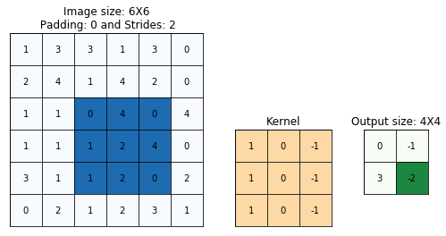
from keras.datasets import mnistUsing TensorFlow backend.img_rows, img_cols = 28, 28
# the data, split between train and test sets
(x_train, y_train), (x_test, y_test) = mnist.load_data()create_animation(x_train[0], kernel, 0, 1, 'mnist.gif', 2, (20, 4))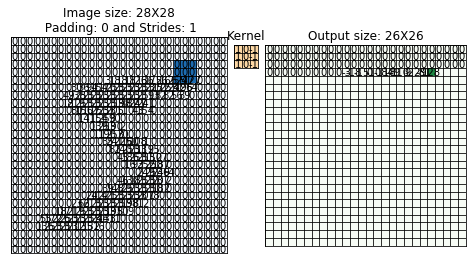
import numpy as np
import matplotlib.pyplot as plt
import matplotlib.ticker as mticker
import matplotlib.animation
#####################
# Array preparation
#####################
#input array
n = 6
p = 0
s = 2
f = 3
a = np.random.randint(0, 5, size=(n, n))
# kernel
kernel = np.tile([1, 0, -1], f).reshape(f, f)
#f = kernel.shape[0]
def create_static(a, kernel, p, s, fname, frate, figsize=(8, 4)):
if p:
# visualization array (2 bigger in each direction)
va = np.zeros((a.shape[0]+2*p, a.shape[1]+2*p), dtype=int)
va[p:-p,p:-p] = a
va_color = np.zeros((a.shape[0]+2*p, a.shape[1]+2*p))
va_color[p:-p,p:-p] = 0.5
else:
va = a
va_color = np.zeros_like(a)
n = a.shape[0]
o_shape = np.floor_divide(n+2*p-f, s)+1
#output array
res = np.zeros((o_shape, o_shape))
#####################
# Create inital plot
#####################
fig = plt.figure(figsize=figsize)
def add_axes_inches(fig, rect):
w,h = fig.get_size_inches()
return fig.add_axes([rect[0]/w, rect[1]/h, rect[2]/w, rect[3]/h])
axwidth = 3.
cellsize = axwidth/va.shape[1]
axheight = cellsize*va.shape[0]
ax_va = add_axes_inches(fig, [cellsize, cellsize, axwidth, axheight])
ax_kernel = add_axes_inches(fig, [cellsize*2+axwidth,
(2+res.shape[0])*cellsize-kernel.shape[0]*cellsize,
kernel.shape[1]*cellsize,
kernel.shape[0]*cellsize])
ax_res = add_axes_inches(fig, [cellsize*3+axwidth+kernel.shape[1]*cellsize,
2*cellsize,
res.shape[1]*cellsize,
res.shape[0]*cellsize])
ax_kernel.set_title("Kernel", size=12)
im_va = ax_va.imshow(va_color, vmin=0., vmax=1.3, cmap="Blues")
ax_va.set_title("Image size: {}X{}\n Padding: {} and Strides: {}".format(n, n, p, s))
for i in range(va.shape[0]):
for j in range(va.shape[1]):
ax_va.text(j,i, va[i,j], va="center", ha="center")
ax_kernel.imshow(np.zeros_like(kernel), vmin=-1, vmax=1, cmap="Pastel1")
for i in range(kernel.shape[0]):
for j in range(kernel.shape[1]):
ax_kernel.text(j,i, kernel[i,j], va="center", ha="center")
im_res = ax_res.imshow(res, vmin=0, vmax=1.3, cmap="Greens")
res_texts = []
for i in range(res.shape[0]):
row = []
for j in range(res.shape[1]):
row.append(ax_res.text(j,i, "", va="center", ha="center"))
res_texts.append(row)
ax_res.set_title("Output size: {}X{}".format(n+2*p-f+1, n+2*p-f+1))
for ax in [ax_va, ax_kernel, ax_res]:
ax.tick_params(left=False, bottom=False, labelleft=False, labelbottom=False)
ax.yaxis.set_major_locator(mticker.IndexLocator(1,0))
ax.xaxis.set_major_locator(mticker.IndexLocator(1,0))
ax.grid(color="k")
###############
# Animation
###############
def init():
for row in res_texts:
for text in row:
text.set_text("")
def animate(ij):
i,j=ij
o = kernel.shape[1]//2
# calculate result
res_ij = (kernel*va[1+s*i-o:1+s*i+o+1, 1+s*j-o:1+s*j+o+1]).sum()
res_texts[i][j].set_text(res_ij)
# make colors
c = va_color.copy()
c[1+s*i-o:1+s*i+o+1, 1+s*j-o:1+s*j+o+1] = 1.
im_va.set_array(c)
r = res.copy()
r[i,j] = 1
im_res.set_array(r)
i,j = np.indices(res.shape)
frames=zip(i.flat, j.flat)
animate(frames)
fig.savefig(fname)from keras import backend as K
# input image dimensions
img_rows, img_cols = 28, 28
# the data, split between train and test sets
(x_train, y_train), (x_test, y_test) = mnist.load_data()
if K.image_data_format() == 'channels_first':
x_train = x_train.reshape(x_train.shape[0], 1, img_rows, img_cols)
x_test = x_test.reshape(x_test.shape[0], 1, img_rows, img_cols)
input_shape = (1, img_rows, img_cols)
else:
x_train = x_train.reshape(x_train.shape[0], img_rows, img_cols, 1)
x_test = x_test.reshape(x_test.shape[0], img_rows, img_cols, 1)
input_shape = (img_rows, img_cols, 1)import tensorflow.keras as keras
import tensorflow.keras.layers as layers
model_vertical_edge = keras.Sequential()
model_vertical_edge.add(layers.Conv2D(filters=1, kernel_size=(3, 3), activation='linear', input_shape=(28, 28, 1)))model_vertical_edge_relu = keras.Sequential()
model_vertical_edge_relu.add(layers.Conv2D(filters=1, kernel_size=(3, 3), activation='relu', input_shape=(28, 28, 1)))T = model_vertical_edge.layers[0].get_weights()
filter_conv = filter_conv
T[0] = filter_conv.reshape(T[0].shape)
model_vertical_edge.layers[0].set_weights(T)sns.heatmap(model_vertical_edge.predict(x_train[2:3]/255).reshape(26, 26),cmap='Greys')
plt.savefig("4-vertical-edge-linear.pdf", transparent=True)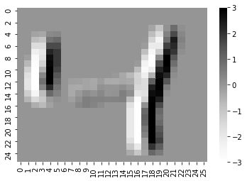
T = model_vertical_edge_relu.layers[0].get_weights()
filter_conv = filter_conv
T[0] = filter_conv.reshape(T[0].shape)
model_vertical_edge_relu.layers[0].set_weights(T)sns.heatmap(model_vertical_edge_relu.predict(x_train[2:3]/255).reshape(26, 26),cmap='Greys')
plt.savefig("4-vertical-edge-relu.pdf", transparent=True)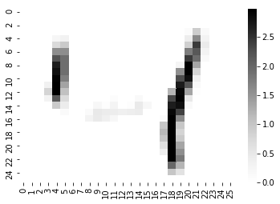
sns.heatmap((x_train[2:3]/255).reshape(28, 28),cmap='Greys')
plt.savefig("mnist-4.pdf", transparent=True)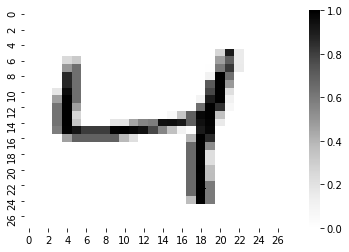
model_horizontal_edge_relu = keras.Sequential()
model_horizontal_edge_relu.add(layers.Conv2D(filters=1, kernel_size=(3, 3), activation='relu', input_shape=(28, 28, 1)))T = model_horizontal_edge_relu.layers[0].get_weights()
T[0] = filter_conv.T.reshape(T[0].shape)
model_horizontal_edge_relu.layers[0].set_weights(T)sns.heatmap(model_horizontal_edge_relu.predict(x_train[2:3]/255).reshape(26, 26),cmap='Greys')
plt.savefig("4-horizontal-edge-relu.pdf", transparent=True)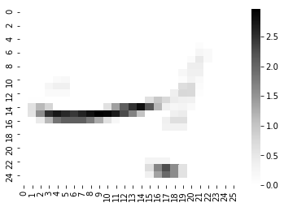
sns.heatmap((x_train[0:1]/255).reshape(28, 28),cmap='Greys')
plt.savefig("mnist-5.pdf", transparent=True)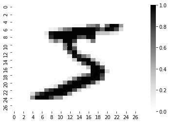
sns.heatmap(model_horizontal_edge_relu.predict(x_train[0:1]/255).reshape(26, 26),cmap='Greys')
plt.savefig("5-horizontal-edge-relu.pdf", transparent=True)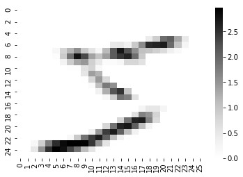
sns.heatmap(model_vertical_edge_relu.predict(x_train[0:1]/255).reshape(26, 26),cmap='Greys')
plt.savefig("5-vertical-edge-relu.pdf", transparent=True)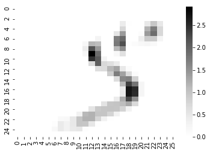
sns.heatmap((x_train[5:6]/255).reshape(28, 28),cmap='Greys')
plt.savefig("mnist-2.pdf", transparent=True)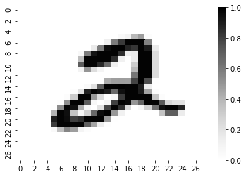
sns.heatmap(model_horizontal_edge_relu.predict(x_train[5:6]/255).reshape(26, 26),cmap='Greys')
plt.savefig("2-horizontal-edge-relu.pdf", transparent=True)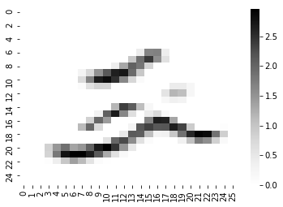
sns.heatmap(model_vertical_edge_relu.predict(x_train[5:6]/255).reshape(26, 26),cmap='Greys')
plt.savefig("2-vertical-edge-relu.pdf", transparent=True)
sns.heatmap((x_train[6:7]/255).reshape(28, 28),cmap='Greys')
plt.savefig("mnist-1.pdf", transparent=True)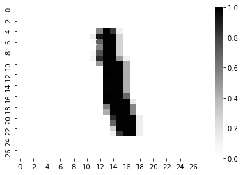
sns.heatmap(model_horizontal_edge_relu.predict(x_train[6:7]/255).reshape(26, 26),cmap='Greys')
plt.savefig("1-horizontal-edge-relu.pdf", transparent=True)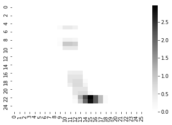
sns.heatmap(model_vertical_edge_relu.predict(x_train[6:7]/255).reshape(26, 26),cmap='Greys')
plt.savefig("1-vertical-edge-relu.pdf", transparent=True)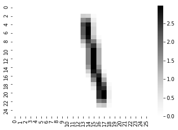
from keras.datasets import cifar10
(x_train, y_train), (x_test, y_test) = cifar10.load_data()Downloading data from https://www.cs.toronto.edu/~kriz/cifar-10-python.tar.gz
170500096/170498071 [==============================] - 91s 1us/stepmodel = Sequential()
model.add(Conv2D(32, (3, 3), padding='same',
input_shape=x_train.shape[1:]))
model.add(Activation('relu'))model_horizontal_edge_relu = keras.Sequential()
model_horizontal_edge_relu.add(layers.Conv2D(filters=1, kernel_size=(3, 3), activation='relu', input_shape=(32, 32, 3)))model_horizontal_edge_relu.layers[0].get_weights()[0].shape(3, 3, 3, 1)filter_3d_horizontal = np.empty((3, 3, 3))
filter_3d_horizontal[:] = filter_conv.Tfilter_3d_horizontalarray([[[ 1., 1., 1.],
[ 0., 0., 0.],
[-1., -1., -1.]],
[[ 1., 1., 1.],
[ 0., 0., 0.],
[-1., -1., -1.]],
[[ 1., 1., 1.],
[ 0., 0., 0.],
[-1., -1., -1.]]])T = model_horizontal_edge_relu.layers[0].get_weights()
T[0] = filter_3d_horizontal.reshape(T[0].shape)
model_horizontal_edge_relu.layers[0].set_weights(T)plt.imshow(x_train[4])
plt.title(y_train[4])
plt.savefig("cifar-10-car.pdf", transparent=True)/home/nipunbatra-pc/anaconda3/lib/python3.7/site-packages/matplotlib/text.py:1191: FutureWarning: elementwise comparison failed; returning scalar instead, but in the future will perform elementwise comparison
if s != self._text: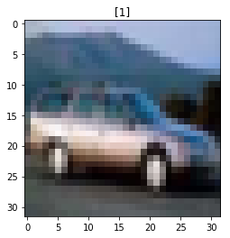
plt.imshow(x_train[4][:, :, 0], cmap='Reds')
plt.savefig("cifar-10-car-red.pdf", transparent=True)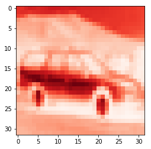
plt.imshow(x_train[4][:, :, 1], cmap='Greens')
plt.savefig("cifar-10-car-green.pdf", transparent=True)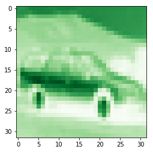
plt.imshow(x_train[4][:, :, 2], cmap='Blues')
plt.savefig("cifar-10-car-blue.pdf", transparent=True)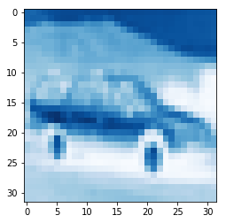
sns.heatmap(model_horizontal_edge_relu.predict(x_train[6:7]).reshape(30, 30),cmap='Greys')<matplotlib.axes._subplots.AxesSubplot at 0x7f70d40ae278>
x_train.shape[1:](32, 32, 3)model_horizontal_edge_relu.predict(x_train[4:5]).shape(1, 30, 30, 1)model_vertical_edge_relu = keras.Sequential()
model_vertical_edge_relu.add(layers.Conv2D(filters=1, kernel_size=(3, 3), activation='relu', input_shape=(32, 32, 3)))filter_3d_vertical = np.empty((3, 3, 3))
filter_3d_vertical[:] = filter_conv
filter_3d_vertical = filter_3d_vertical
T = model_vertical_edge_relu.layers[0].get_weights()
T[0] = filter_3d_vertical.reshape(T[0].shape)
model_vertical_edge_relu.layers[0].set_weights(T)plt.imshow((filter_3d_horizontal+1)/2)<matplotlib.image.AxesImage at 0x7f711ae48438>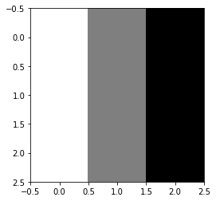
plt.imshow(((filter_3d_vertical+1)/2).T)<matplotlib.image.AxesImage at 0x7f711a4deb38>
filter_3d_verticalarray([[[ 1., 0., -1.],
[ 1., 0., -1.],
[ 1., 0., -1.]],
[[ 1., 0., -1.],
[ 1., 0., -1.],
[ 1., 0., -1.]],
[[ 1., 0., -1.],
[ 1., 0., -1.],
[ 1., 0., -1.]]])(filter_3d_vertical+1)/2array([[[1. , 0.5, 0. ],
[1. , 0.5, 0. ],
[1. , 0.5, 0. ]],
[[1. , 0.5, 0. ],
[1. , 0.5, 0. ],
[1. , 0.5, 0. ]],
[[1. , 0.5, 0. ],
[1. , 0.5, 0. ],
[1. , 0.5, 0. ]]])sns.heatmap(model_vertical_edge_relu.predict(x_train[6:7]).reshape(30, 30),cmap='Greys')<matplotlib.axes._subplots.AxesSubplot at 0x7f711814d6a0>
model_vertical_edge_relu.layers[0].get_weights()[0][0].shape(3, 3, 1)import scipy
img = x_train[6:7].reshape(32, 32, 3)
from skimage import color
img = color.rgb2gray(img)
sharpen_kernel = np.array([[0,-1,0],[-1,5,-1],[0,-1,0]])
image_sharpen = scipy.signal.convolve2d(img, sharpen_kernel, 'valid')from skimage import iobeach = io.imread("beach.jpg")beach.shape(1704, 2272, 3)buildings = io.imread("buildings.jpg")buildings.shape(1704, 2272, 3)plt.imshow(beach)
plt.axis('OFF')(-0.5, 2271.5, 1703.5, -0.5)
plt.imshow(beach[:, :, 0], cmap='Reds')
plt.axis('off')(-0.5, 2271.5, 1703.5, -0.5)
plt.imshow(beach[:, :, 1], cmap='Greens')<matplotlib.image.AxesImage at 0x7f711bad72e8>
plt.imshow(beach[:, :, 2], cmap='Blues')<matplotlib.image.AxesImage at 0x7f711baf92e8>
vertical_kernel = np.array([[1,0,-1],[1,0,-1],[1,0,-1]])
image_out_beach_red = scipy.signal.convolve2d(beach[:, :, 0], vertical_kernel, 'valid')
plt.imshow(image_out_beach_red, cmap='Greys')<matplotlib.image.AxesImage at 0x7f7117df2080>
vertical_kernel = np.array([[1,0,-1],[1,0,-1],[1,0,-1]])
image_out_beach_green = scipy.signal.convolve2d(beach[:, :, 1], vertical_kernel, 'valid')
plt.imshow(image_out_beach_green, cmap='Greens')
plt.axis('off')(-0.5, 2269.5, 1701.5, -0.5)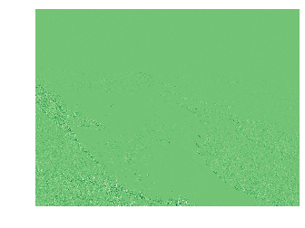
vertical_kernel = np.array([[1,0,-1],[1,0,-1],[1,0,-1]])
image_out_beach_blue = scipy.signal.convolve2d(beach[:, :, 2], vertical_kernel, 'valid')
plt.imshow(image_out_beach_blue, cmap='Blues')
plt.axis('off')(-0.5, 2269.5, 1701.5, -0.5)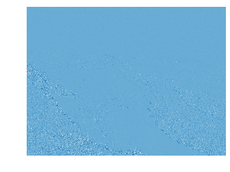
image_out_buildings_blue = scipy.signal.convolve2d(buildings[:, :, 2], vertical_kernel, 'valid')
plt.imshow(image_out_buildings_blue, cmap='Greys')
plt.axis('off')(-0.5, 2269.5, 1701.5, -0.5)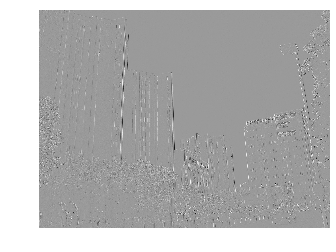
horizontal_kernel = vertical_kernel.T
horizontal_kernelarray([[ 1, 1, 1],
[ 0, 0, 0],
[-1, -1, -1]])image_out_buildings_blue_horizontal = scipy.signal.convolve2d(buildings[:, :, 2], horizontal_kernel, 'valid')
plt.imshow(image_out_buildings_blue_horizontal, cmap='Greys')
plt.axis('off')(-0.5, 2269.5, 1701.5, -0.5)